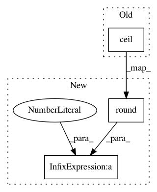

fbc4b0cbb4956fecce389a6e76f22f2112c84768,chaospy/distributions/collection/discrete_uniform.py,DiscreteUniform,_cdf,#DiscreteUniform#Any#Any#Any#,43
Before Change
def _cdf(self, x_data, lower, upper):
Cumulative distribution function.
return ((numpy.floor(x_data)-numpy.ceil(lower))/
(numpy.floor(upper)-numpy.ceil(lower)))
def _lower(self, lower, upper):
Lower bounds.
After Change
def _cdf(self, x_data, lower, upper):
Cumulative distribution function.
lower = numpy.round(lower)
upper = numpy.round(upper)
out = (x_data-lower+0.5)/(upper-lower+1)
return out
def _lower(self, lower, upper):
In pattern: SUPERPATTERN
Frequency: 3
Non-data size: 3
Instances
Project Name: jonathf/chaospy
Commit Name: fbc4b0cbb4956fecce389a6e76f22f2112c84768
Time: 2020-07-13
Author: jonathf@users.noreply.github.com
File Name: chaospy/distributions/collection/discrete_uniform.py
Class Name: DiscreteUniform
Method Name: _cdf
Project Name: jonathf/chaospy
Commit Name: fbc4b0cbb4956fecce389a6e76f22f2112c84768
Time: 2020-07-13
Author: jonathf@users.noreply.github.com
File Name: chaospy/distributions/collection/discrete_uniform.py
Class Name: DiscreteUniform
Method Name: _ppf
Project Name: jonathf/chaospy
Commit Name: fbc4b0cbb4956fecce389a6e76f22f2112c84768
Time: 2020-07-13
Author: jonathf@users.noreply.github.com
File Name: chaospy/distributions/collection/discrete_uniform.py
Class Name: DiscreteUniform
Method Name: _lower